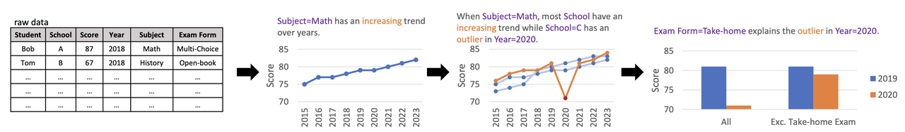
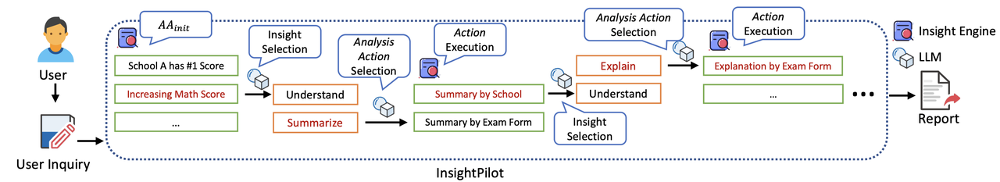
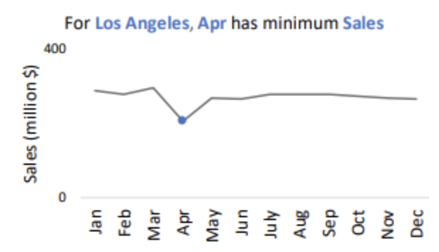
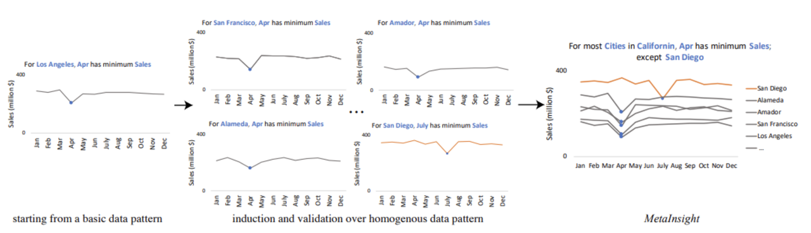
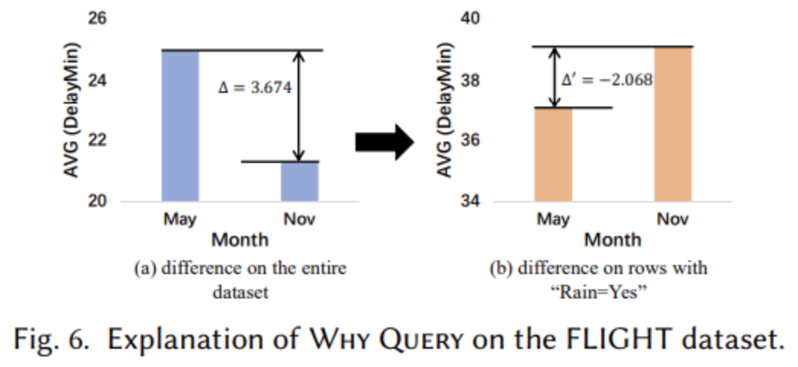
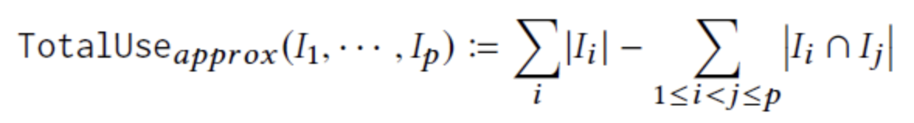
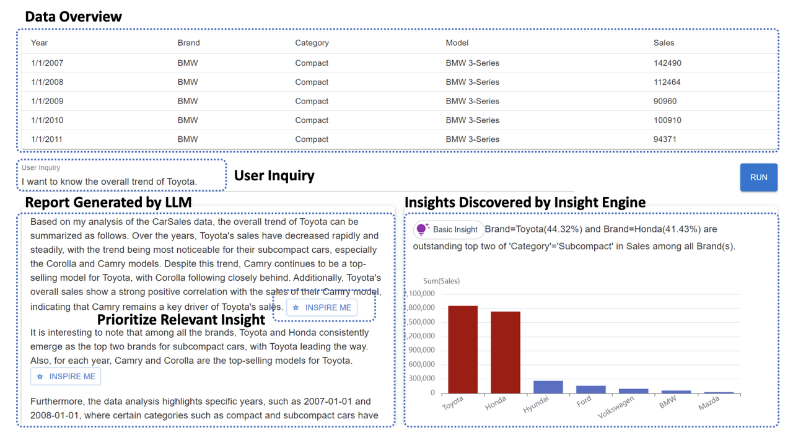
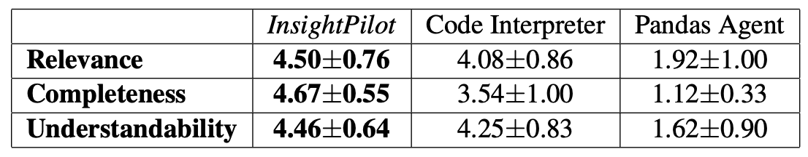

论文：InsightPilot: An LLM-Empowered Automated Data Exploration System
作者：Pingchuan Ma, Rui Ding, Shuai Wang, Shi Han, Dongmei Zhang
发表：EMNLP 2023
简介：数据探索是帮助用户更好理解和解释数据的关键步骤。然而，分析者只有在对数据集、用户意图以及数据分析技术有深入了解的情况下才能进行有效的数据探索，否则分析过程往往耗时且困难。本文提出了一个基于大型语言模型的自动化数据探索系统 (InsightPilot) 来简化数据探索过程。InsightPilot 提供了一系列精心设计的分析动作来流程化数据探索过程。给定一个自然语言问题，InsightPilot通过与 LLM 协作来执行一系列分析操作，探索数据并生成见解。本文通过用户研究和案例研究展示了 InsightPilot如何有效帮助用户从其数据集中获得有价值的见解。
背景介绍
什么是探索性数据分析（EDA）？
从数据中提取有意义见解的任务。通常涉及一系列数据分析操作，如过滤、排序和分组，以发现数据中的模式。
一个EDA的案例：

使用来自多所学校的学绩数据集，教育分析师Alice进行探索性数据分析（EDA）以理解数学成绩的趋势。经过大量的手动数据过滤和排序，Alice通过绘制数学成绩随时间的变化图捕捉到了上升趋势。然后，Alice进一步努力进行手动数据过滤，以比较学校A、B和C的学生表现。最终，她观察到学校A和B都呈现出上升趋势，而学校C在2020年有一个异常值。Alice对此感到好奇，决定调查这个异常值。她花费更多时间反复探索数据，通过各种变量进行过滤和分组，直到她最终发现，当排除“带回家”考试时，学校C在2020年的异常值不再存在。Alice记录下这一发现，并得出结论，该异常值是由于学校C在2020年考试形式的政策变化所导致的。
EDA存在的挑战：
从案例中我们可以看出，EDA过程通常是迭代和交互的，用户需要手动反复探索数据以获得见解。这一过程往往耗时且需要大量的领域知识和专业技能。
先前解决方案：
利用启发式评分函数来识别“最佳”数据探索序列（一系列数据分析操作），然而，这样的方法存在两大关键问题。
问题1: 忽略用户意图
现有的工具设计用于一般探索，通常无法结合用户意图。例如，分析师可能对理解与经济相关的因素感兴趣，但收到的见解却是关于人口统计学的。
问题2: 忽略数据集的特征
现有的工具忽略了数据集的特征，通常提供无关的洞察。例如，在航班延误数据集中，航班延误与天气之间的相关性可能是合理的，但在该背景下，时间与天气之间的相关性不太合理。
LLM带来了新的机会：
LLM能够理解用户的分析意图并执行一系列动作完成目标，并且具有通用的常识和推理能力。然而之间让LLM去执行EDA也存在一系列问题，例如幻觉和有限的上下文窗口（难以处理较大的数据集）。
本文方法：
整体框架

提出了InsightPilot，一个用LLM来做EDA的系统，核心思想是让LLM通过和一个洞察引擎（包含三个先前的洞察发现工具，QuickInsight，MetaInsight和XInsight）不断交互来根据用户的分析意图进行EDA，并最后生成相应报告。洞察引擎对数据集提高了精确合理的抽象，从而缓解了LLM幻觉和上下文窗口有限的问题。
洞察引擎：
洞察引擎其实就可以理解为一个可供调用的tool集，包含了微软之前三个先前的洞察发现工具，QuickInsight，MetaInsight和XInsight。
工具1: QuickInsight （Understand）
QuickInisght 是最早也是功能最基础的数据分析工具，它能快速发现多维数据中的 pattern。它的洞察数据单元由三个要素组成subject = {subspace数据空间, breakdown 拆分维度, measure观察指标}， 以下是{Los Angeles，Month，Sales}产生的数据洞察

QuickInsight，会先按不同维度，计算不同指标得到多组数据。洞察部分则是预定了 12 种不同的数据分析方式，例如异常值，突变点，趋势，季节性，相关性等等。每种洞察类型会基于显著性和贡献度进行综合打分，排名靠前的应该是单维度数据变化最显著，且对整体影响较大的。
工具2: MetaInsight（Summarize）
QuickInsight的洞察主要基于单个洞察数据单元进行，MetaInsight可以聚合关联多个洞察数据单元，产出更复杂，高级的数据洞察。简单来说是在以上三元组数据洞察的基础上，搜索不同的subsapce，以及measure，寻找具有相似数据洞察的三元组，并进行组合分析。继续以上洛杉矶销量数据的洞察，当我们扩展subspace到其他城市的销售数据时，MetaInsight会产出以下关联分析。

工具3: XInsight（Explain）
以上QuickInsight和MetaInsight都还停留在相关性数据分析的领域，而XInsight着眼在因果性分析。以下的案例中，同样是按月份维度进行拆分，航班延误时间作为指标。当在整个数据上进行洞察时会发现5月的延误时间比11月高了很多，但当控制变量当日是否下雨时，会发现在下雨天5月的航班延误时间是要低于11月的，因此5月份更高的降雨率可能可以解释5月更高的航班延误时间。

具体流程：初始洞察生成->洞察选择->分析动作选择->洞察选择->分析动作选择…->最终洞察排序->最终报告生成
[stepA] 初始洞察生成:
先调用QuickInsight生成数据集的基础洞察。
[stepB] 洞察选择：
使用Prompt，让LLM基于Agent返回的多条数据洞察，用户Query，和数据集的描述（类似DB Schema）,来选择一条洞察结果来进行进一步分析。
[stepC] 分析动作选择：
大模型会基于用户query，已有洞察内容，来选择一个分析动作（Understand-QuickInsight, Summarize-MetaInsight, Explain-XInsight）来继续分析，生成新的洞察。
(循环stepB和stepC) …
[stepD] 最终洞察排序：
最后基于TopK数据洞察生成报告来解答用户问题。在最后筛选保留Top-K洞察的部分，论文还加入了Ranking环节：
首先洞察之间两两消重，如果A洞察包含B洞察的内容，则删除B洞察。
其次是相似度过滤，会过滤和用户提问关联较低的洞察。
最后是打散策略，是为了降低洞察之间的相似度，提高最终内容的丰富度。这里使用了以下的二阶近似打分的策略如下，其中|I|是每条洞察的有用性打分，交集打分是两条洞察有用性的最小值*洞察重叠度，整体策略是为了提高TopK洞察整体包含的信息量。

[stepE] 最终报告生成：
最终是InsightPilot生成的报告效果，以及支持用户对报告内容的每个段落，进行数据验证，当点击第一个段落Inspire Me时会生成对应段落相关的数据图表（下图）。

文中案例：
文中给了一个比较简单的且不太完整案例输出作为展示，且只是对着最终report泛泛而谈，并没有结合前文提到的具体流程展示如何一步步得到最后的report：
用户上传一个汽车销售数据集，并询问“我想知道丰田的整体趋势”。首先，InsightPilot识别出“丰田在其年销售量上呈现下降趋势”，然后深入研究丰田的两个代表性车型，即“丰田卡罗拉”和“丰田凯美瑞”。系统识别出“卡罗拉”和“凯美瑞”是丰田的两个畅销车型，并且“凯美瑞”的销售与丰田的整体销售有很强的相关性。因此，InsightPilot得出结论，凯美瑞是丰田销售的关键驱动力。之后，InsightPilot进一步将丰田与本田进行比较，并识别出它们是小型车市场的前两大品牌，而丰田领先。此外，InsightPilot还研究了丰田在不同年份的销售情况，并获得了其他一些见解（未展开说）。
方法评估：

使用“gpt-3.5-turbo”作为评估使用的语言模型，并使用“text-embedding-ada-002”来生成嵌入。我们进行了一项用户研究，以模拟InsightPilot在现实世界中的应用，对比两个现有Baseline（OpenAI Code Interpreter（和Langchain Pandas Agent）。评估中用户被给予两个数据集，并被要求在InsightPilot应用程序范围内提出三个问题，结果产生了24组比较（4名参与者×2个数据集×3个问题）。用户根据相关性、完整性和可理解性（1到5分）对系统进行评分。
讨论：
本文最后的效果还是很不错的，用LLM控制整个探索流程也是一个不错的思路，不过主要是先前的三个Insight工具提供了非常强的基础能力，给数据集的探索做了很好的抽象，提供了一个很好的探索环境。
本文LLM部分和评估部分都还做得比较简单，接下来还是有深挖的空间的：1. 比如目前agent的探索是线性的，其实是可以做多线探索、推理和回溯的，甚至可以做多智能体/多用户的协作探索，可能还可以结合最近o1相关的进展。2. 客观评估指标的定义以及中间过程奖励的设计也值得探索。3. 此外，先前的三个Insight工具是在LLM没有兴起的时代设计的，不一定是对数据集最合理的抽象，如何设计更合理的对数据集的抽象来提高探索的自由度、效率、可拓展性等也是值得思考的问题。
参考资料：
论文原文：https://arxiv.org/pdf/2304.00477
作者博客：https://www.msra.cn/zh-cn/news/features/exploratory-data-analysis
第三方博客：https://blog.csdn.net/2401\_82469710/article/details/135882170
✉️ zjuvis@cad.zju.edu.cn